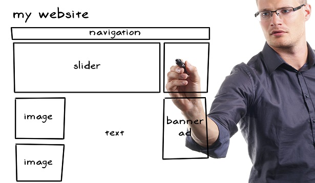
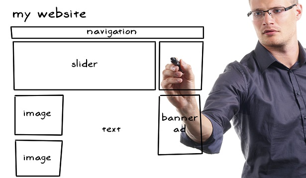

前序-具备开发大型应用基础能力的语言特点


Morgan Liao
April 18th, 2017
1 如何初始化框架
2 怎么做与服务器的请求调用
3 axios跨域的时候如何保持cookie
4 如何引入vuex
5 如何控制需登录态的页面只有登录的时候才能访问
6 如何集成weui以及引入scss
7 如何使用组件
8 如何与现有系统集成
9 如何做到服务端session保持
10 如何调试nodejs和vue代码
11 新框架的优点/缺点
12 后续问题及任务
13 F.Y.I.
14 Q&A
npm install -g vue-cli // 安装vue-cli工具
vue init webpack my-project // 用vue工具初始化一个脚手架框架
cd my-project
npm install // 因下载的东西比较多，请耐心等待或尽量在网络好的情况下安装
// 不要选择用taobao镜像去装，容易装的npm包不齐全或版本不一致
// 常因没有完整安装出些诡异问题，
// 可选做法：卸载重装或直接copy别人的node_modules文件夹
npm run dev // 以dev模式启动整个工程
// nginx端配置 add_header Access-Control-Allow-Origin "http://dev.hdfax.com" add_header Access-Control-Allow-Credentials true // axios中设置： axios.defaults.withCredentials = true
// 引用vue-router也是这样的
import Vuex from 'vuex'
import Vue from 'vue'
Vue.use(Vuex)
export default new Vuex.Store({
state: {
token: ''
},
mutations: {
'saveToken': (state, data) => {
localStorage.token = data
state.token = data
},
'removeToken': (state) => {
localStorage.removeItem('token')
state.token = null
}
}
})
if (window.localStorage.getItem('token')) {
store.commit('saveToken', window.localStorage.getItem('token'))
}
[以后需要考虑为不能用localStorage的情况做，降级处理]
// 考虑weui不需要scss直接link。本身weui.min.css在建工程的就放在static目录下 <link rel="stylesheet" href="/v2/static/weui/weui.min.css"> // 注：对应的路径和config/index.js中保持一致
import '@/scss/common.scss' // 但是会显示编译不通过， // 原因: 在最开始npm install时node-sass并没有完全安装好，可能因为被墙了 // 测试卸载，用淘宝镜像重装一遍就好 npm uninstall node-sass npm install node-sass --registry=http://registry.npm.taobao.org
// 引入
import popup from '@/components/Popup.vue'
// 注册
export default {
name: 'app',
created: function () {
},
components: { popup },
methods: {}
}
// 使用
<div id="app">
<router-view></router-view>
<popup></popup>
</div>
<bean class="org.springframework.web.servlet.view.InternalResourceViewResolver">
<property name="prefix" value="/v2/"/>
<property name="suffix" value=".html"/>
<property name="contentType" value="text/html;charset=UTF-8"/>
<property name="order" value="3"/>
</bean>
// build index: path.resolve(__dirname, '../../src/main/webapp/v2/index.html'), assetsRoot: path.resolve(__dirname, '../../src/main/webapp/v2'), assetsSubDirectory: 'static', assetsPublicPath: '/v2/', // dev assetsSubDirectory: 'static', assetsPublicPath: '/v2/',
1 直接调用mobile-website以后， 就相当于现有的html文件调用服务端一样，不能存在任何兼容问题 2 后续改成调用mtp，直接把mtp拿到的cookie存在vuex store中， 然后每次调用带上即可 3 若改成mtp调用，共享session模块三端需要做改造
1 npm install -g node-inspector //全局安装node-inspector 2 打开cmd输入: node-inspector & 3 在chrome中打开http://127.0.0.1:8080/?port=5858 4 打开cmd输入：node --debug-brk C:/git/../../jupiter/build/dev-server.js //这里必须写绝对路径，相对路径会在浏览器中看不到东西 5 chrome中会自动加载dev-server.js然后就像平常调试一样